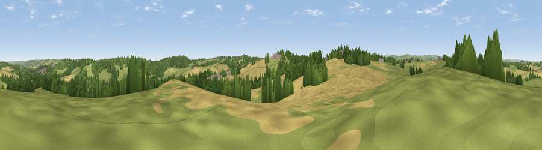

Viewpoint near Astwith
#35288 in England · top 62% of its area beats it · near Astwith · path 74 mWhere it is
The exact computed spot (SK 44575 63625). Click the marker for map links.
Public access: the nearest public right of way is about 74 m away — the final stretch may cross private land. Computed from Natural England's CRoW access layer and OpenStreetMap rights of way — not the legal definitive map. Always verify locally.
The view, rendered

A 360° render of this exact spot computed from the terrain model, tree cover and land cover — summer colours, afternoon light, calibrated against photographs of famous viewpoints. Real trees, hedges and buildings will differ in detail.
The panorama
Grey silhouette: terrain skyline in each direction (720 bearings, Earth curvature and refraction included). Dashed green: skyline with trees (+15 m) and buildings (+8 m) as obstacles. Blue strip: how far the ground is visible on each bearing.
Where the view opens
Wedge length = distance to the farthest visible ground on that bearing (vegetation-aware). Rings at 10, 25 and 50 km.
What fills the view
39% cropland · 35% grassland · 23% woodland · 2% built-up ·
Angular shares of the visible panorama (visual magnitude), not map area. Landscape diversity 0.52 (0–1 Shannon).
Key numbers
More beautiful places nearby
The staircase of upgrades: each row has a higher view potential than everything closer. Driving times are estimates from straight-line distance, calibrated against real road routing — check an actual route before setting out.
| Place | Direction | Drive | Score |
|---|---|---|---|
| Viewpoint near Stanley | E · 2 km | ~5 min | 42.2 |
| Viewpoint near Stainsby | ENE · 2 km | ~5 min | 53.9 |
| Viewpoint near Palterton | NNE · 5 km | ~11 min | 58.5 |
| Viewpoint near Palterton | NNE · 6 km | ~12 min | 59.9 |
| Viewpoint near Bolsover | NNE · 8 km | ~16 min | 60.4 |
| Viewpoint near Alton | W · 9 km | ~17 min | 67.7 |
| Viewpoint near Brackenfield | WSW · 10 km | ~19 min | 68.3 |
| Crich Stand | SW · 13 km | ~24 min | 73.0 |
53.16788, -1.33468 · source: screening · position refined by local search. Computed location — check access rights before visiting.